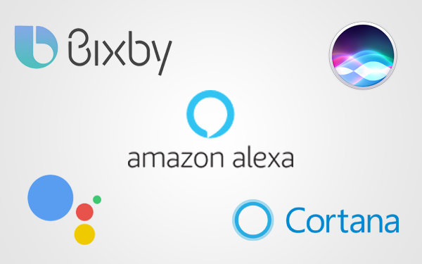

Strong intelligence and weak intelligence
Links:
Strong intelligence (True AI):
Strong artificial intelligence (strong AI) is an artificial intelligence construct that has mental capabilities and functions that mimic the human brain. In the philosophy of strong AI, there is no essential difference between the piece of software, which is the AI, exactly emulating the actions of the human brain, and actions of a human being, including its power of understanding and even its consciousness.
Weak artificial intelligence (weak AI):
is man-made brainpower that actualizes a constrained piece of psyche or as thin AI is centered around one tight undertaking. In John Searle's terms it would be valuable for testing theory about psyches however would not really be minds Contrast with solid AI which is characterized as a machine with the capacity to apply knowledge to any issue, as opposed to only one explicit issue at times considered to require cognizance awareness and brain.
Powerless AI is at times called restricted AI however the last is typically deciphered as subfields inside the previous. Speculation testing about brains or some portion of psyches are ordinarily not part of thin AI, but instead execution of some shallow copy highlight. Numerous as of now existing frameworks that guarantee to utilize man-made reasoning are likely working as a tight AI concentrated on a particular issue, and are not feeble AI in the customary sense.
Examples of weak artificial intelligence:
Personal aid on phones:An individual advanced colleague otherwise called a handheld PC is an assortment cell phone which capacities as an individual data administrator. PDAs have been for the most part uprooted by the boundless selection of profoundly fit cell phones, specifically those dependent on iOS and Android.
Almost all cutting edge PDAs can associate with the Internet. A PDA has an electronic visual showcase, letting it incorporate an internet browser. Most models likewise have sound abilities, permitting utilization as a compact media player, and furthermore empowering the greater part of them to be utilized as phones. Most PDAs can get to the Internet, intranets or extranets by means of Wi-Fi or Wireless Wide Area Networks. Once in a while, rather than catches, PDAs utilize touchscreen innovation. The innovation business has as of late reused the term individual advanced help. The term is all the more ordinarily utilized for programming that recognizes a client's voice to answer to the inquiries.
Assistants:

- Google Assistant
- SIRI
- Cortana
- Alexa
- Bixby